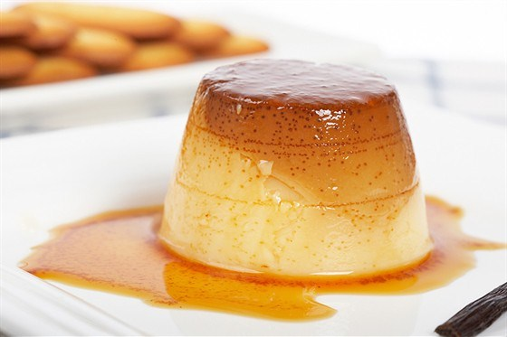

asdasd asdasd
asdasd asdasd
Банановый пудинг - это блюдо1, которое можно приготовить на кухне вашего дома.
Рецепт Бананового пудинга можно купить в Торговой хижине 2 на Имбирном острове.
Я помню чудное мгновенье:Содержание:
Формула воды H2 O
Формула a2+b2
| Мука | 4 ст. л. | |
| Соль | ¼ ч. л. | |
| Молоко | 3,6% 3 стакана | |
| Яйца куриные | 3 шт. | |
| Ванильный экстракт | 1½ ч. л. | |
| Сахар | ¾ стакана | |
В большой кастрюле смешать сахар, муку, соль и молоко.
Поставить на огонь и готовить помешивая.
Как появятся пузырьки, убавить огонь и готовить еще 2 минуты.
Убрать с огня.
В небольшой емкости смешать 3 яйца.
Добавить небольшое количество горячей смеси.
Перемешать.
Вернуть кастрюлю на огонь, перелить аккуратно смесь яичную и перемешать. Помешивая довести до небольшого кипения, и продолжать еще 2 минуты мешать. Снять с огня, добавить ванильный экстракт. Дать постоять 15 минут.
Формочки можно индивидуальные или одну квадратную форму. Выложить на дно вафли слоем, затем очищенные и порезанные бананы.
Залить смесью, прикрывая вафли и банановые кольца (предварительно можно смесь пудинговую процедить через сито, если после варки остались комочки). Затем повторить выложив поверх вафли, второй слой банановые кольца и третий смесь пудинга. Поставить в холодильник на 4 часа или ночь.
Перед подачей на терке оставшиеся вафли протереть и посыпать сверху каждого пудинга. Подаем к столу.
Приятного аппетита.
© Все права защищены " Этот пудинг можем готовить только мы "
| zsdfs | asdasd | |
| asdas | cxxcbcv | sdfsdfs |
| sdfsdfsd | sdfsdfsdf | |